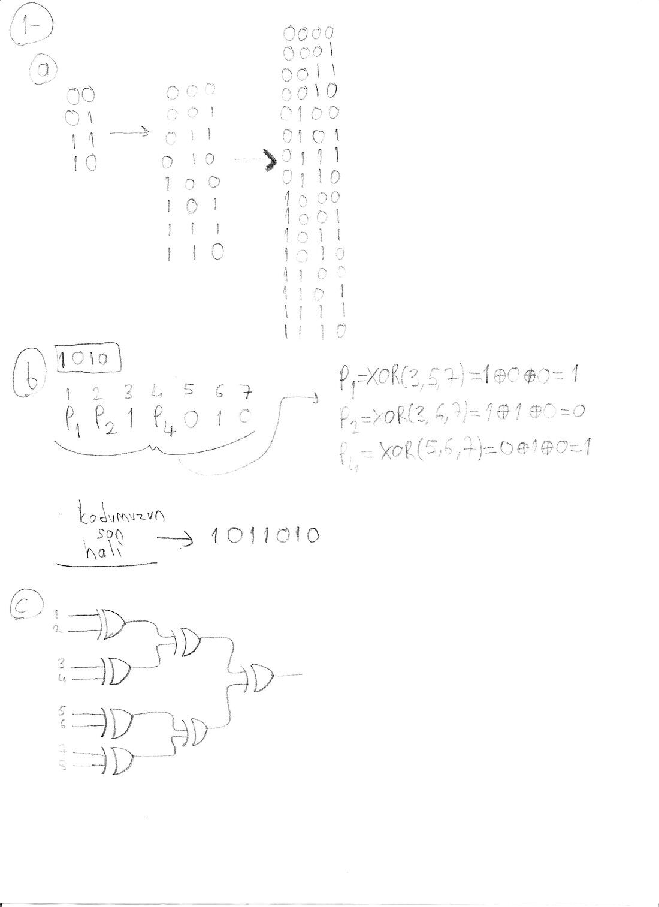
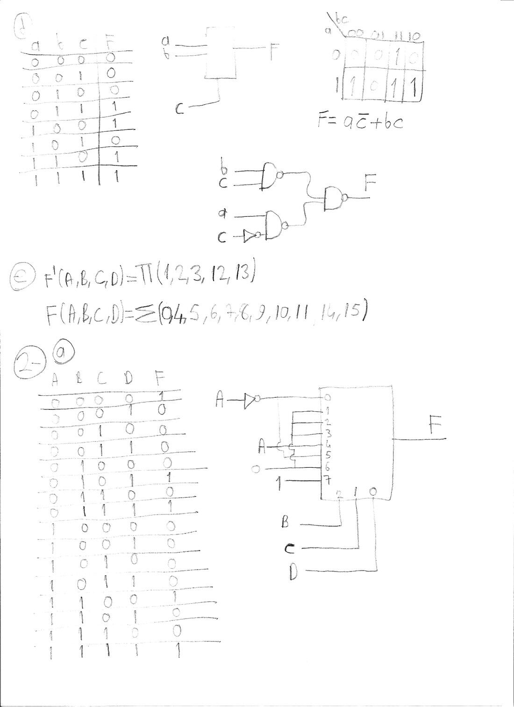
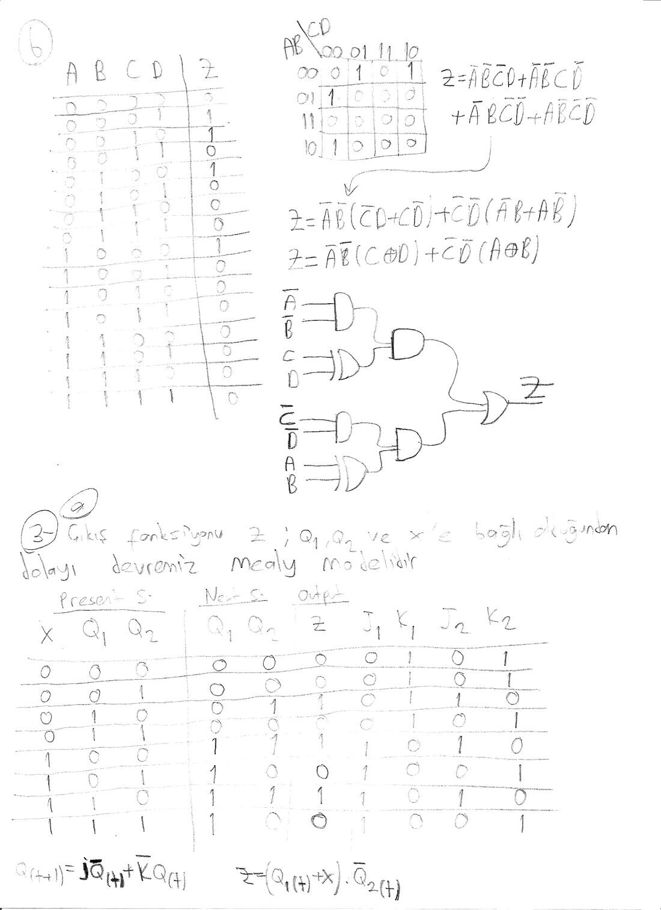
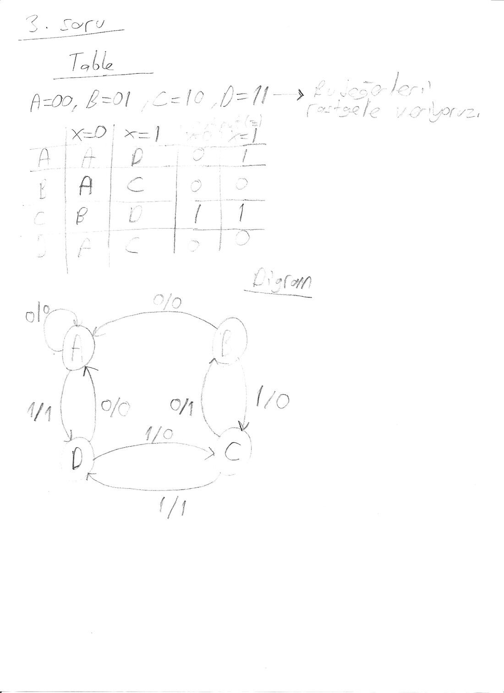
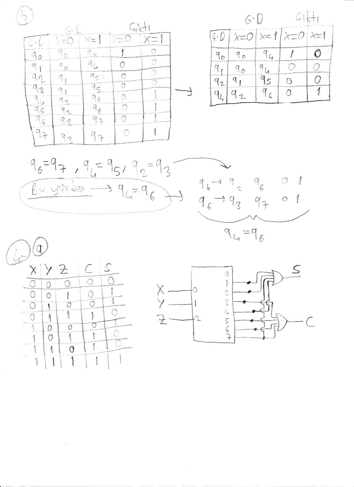
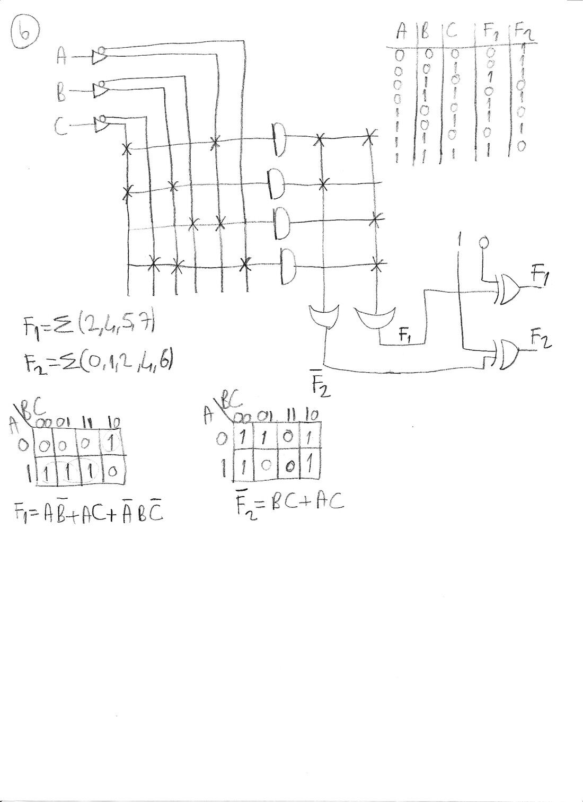
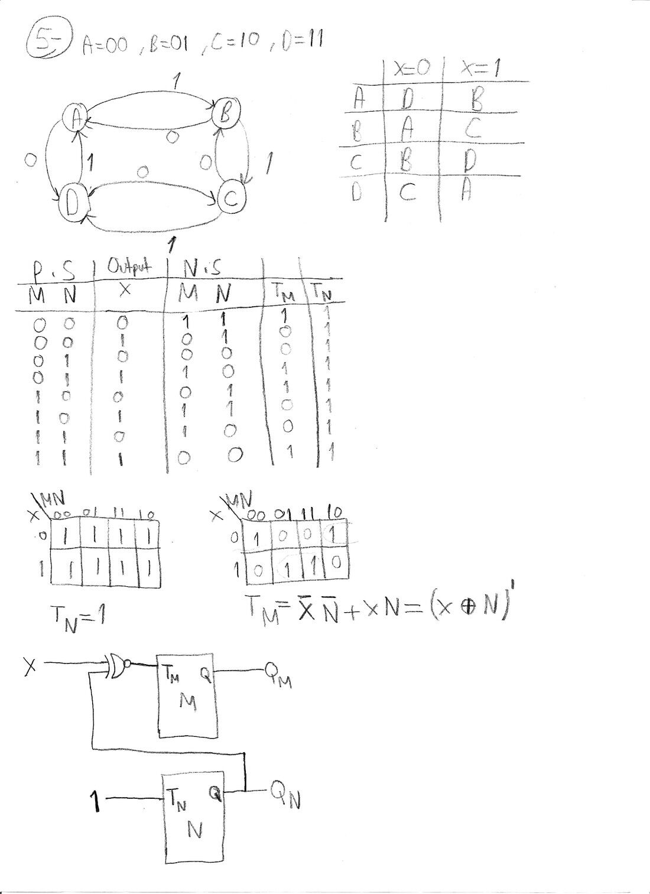

· EEM211
EEM211 Digital Logic Design: Handwritten Final Exam Solutions (Gray Code, Hamming, MUX, Mealy Machine, State Reduction, PLA, Counter with T Flip-Flops)
EEM211 – Sayısal Mantık Tasarımı · 07.10.2015 · 16.10.2026
This post compiles seven Word files named "final cozumleri" from the EEM211 Digital Logic Design sample questions folder. Each file contains a scanned page of pencil-written solutions to the questions of a final exam; the files do not say who wrote the question text or the solutions. The headings, main formulas, and results of the solutions are transcribed below as text; a scanned image of each page (with contrast enhanced for readability) is included. The original Word files can be downloaded as a ZIP at the end of the post.
Page 1: Gray Code, Hamming Code, and Parity Tree (Question 1 a–c)
1a) Gray code by reflection. The 2-bit Gray code (00, 01, 11, 10) is reflected to extend it to the 3-bit code (000, 001, 011, 010, 110, 111, 101, 100), which is then reflected to extend it to the 4-bit code. The 4-bit list on the page:
0000 0001 0011 0010 0110 0111 0101 0100
1100 1101 1111 1110 1010 1011 1001 1000Note: On the page, the last four rows of the 3-bit list are written as 100, 101, 111, 110, and the second half of the 4-bit list as 1000, 1001, 1011, 1010, 1100, 1101, 1111, 1110; that is, the lower halves were not reflected but copied straight. In this order, the single-bit difference between adjacent codes breaks down (e.g., from 010 to 100). The correct order according to the reflection method is given above.
1b) Hamming code for the data 1010. The data bits are placed at positions 3, 5, 6, 7: P1 P2 1 P4 0 1 0.
- P1 = XOR(3, 5, 7) = 1 ⊕ 0 ⊕ 0 = 1
- P2 = XOR(3, 6, 7) = 1 ⊕ 1 ⊕ 0 = 0
- P4 = XOR(5, 6, 7) = 0 ⊕ 1 ⊕ 0 = 1
Final code: 1011010.
1c) A three-level XOR tree that finds the parity of an 8-bit input: the inputs are XORed in pairs (1-2, 3-4, 5-6, 7-8), the results are again XORed in pairs, and the final XOR gives the output.

Page 2: NAND Implementation, Canonical Form, and 8x1 MUX (Question 1 d–e, 2a)
1d) In the truth table, F is 1 for abc = 011, 100, 110, 111. Using a Karnaugh map, F = ac' + bc; this expression is implemented with a two-level NAND-NAND circuit (one inverter for c, two NANDs, and a NAND at the output).
1e) F'(A, B, C, D) = ∏(1, 2, 3, 12, 13) is given; F = Σ(0, 4, 5, 6, 7, 8, 9, 10, 11, 14, 15).
2a) In the truth table, F is 1 for ABCD = 0000, 0101, 0111, 1100, 1111. The function is implemented with an 8x1 MUX with select inputs B, C, D; A, A', or constant 0/1 is connected to the data inputs. From the table, the data inputs are: I0 = A', I1 = I2 = I3 = 0, I4 = A, I5 = A', I6 = 0, I7 = 1.

Page 3: Simplification with XOR and Analysis of a Mealy Circuit (Question 2b, 3a)
2b) Z is 1 for ABCD = 0001, 0010, 0100, 1000 (when exactly one input is 1). From the Karnaugh map:
Z = A'B'C'D + A'B'CD' + A'BC'D' + AB'C'D' = A'B'(C'D + CD') + C'D'(A'B + AB') = A'B'(C ⊕ D) + C'D'(A ⊕ B)
Circuit: an AND for A'B', an XOR for C ⊕ D, and the AND of these; an AND for C'D', an XOR for A ⊕ B, and the AND of these; the two results are combined in an OR gate.
3a) "Since the output function Z depends on Q1, Q2, and x, our circuit is a Mealy model." The state table of the circuit with two JK flip-flops (present state, next state, Z, and J1 K1 J2 K2) is derived. The relations used: Q(t+1) = J·Q'(t) + K'·Q(t) and Z = (Q1(t) + x)·Q2'(t).

Page 4: State Table and Diagram (Question 3)
The values A = 00, B = 01, C = 10, D = 11 are assigned to the states ("we assign these values arbitrarily"), and the state table and diagram are drawn:
| Present state | Next (x = 0) | Next (x = 1) | Z (x = 0) | Z (x = 1) |
|---|---|---|---|---|
| A | A | D | 0 | 1 |
| B | A | C | 0 | 0 |
| C | B | D | 1 | 1 |
| D | A | C | 0 | 0 |

Page 5: State Reduction and Full Adder with a Decoder (Question 3b, 4a)
3b) State reduction. Table with states q0–q7 (N.S.: next state, output):
| P.S. | N.S. (x = 0) | N.S. (x = 1) | Output (x = 0) | Output (x = 1) |
|---|---|---|---|---|
| q0 | q0 | q4 | 1 | 0 |
| q1 | q0 | q4 | 0 | 0 |
| q2 | q1 | q5 | 0 | 0 |
| q3 | q1 | q5 | 0 | 0 |
| q4 | q2 | q6 | 0 | 1 |
| q5 | q2 | q6 | 0 | 1 |
| q6 | q3 | q7 | 0 | 1 |
| q7 | q3 | q7 | 0 | 1 |
States with the same outputs and the same next states are equivalent: q6 = q7, q4 = q5, q2 = q3. After substituting these, q4 (→ q2, q6; 0, 1) and q6 (→ q2, q6; 0, 1) also become the same: q4 = q6. Reduced table:
| P.S. | N.S. (x = 0) | N.S. (x = 1) | Output (x = 0) | Output (x = 1) |
|---|---|---|---|---|
| q0 | q0 | q4 | 1 | 0 |
| q1 | q0 | q4 | 0 | 0 |
| q2 | q1 | q4 | 0 | 0 |
| q4 | q2 | q4 | 0 | 1 |
Note: In the reduced table on the page, the next state of q2 for x = 1 is left as q5, and that of q4 as q6; since q5 = q4 and q6 = q4, these should be written as q4. The table has been corrected accordingly above.
4a) Full adder with a 3x8 decoder. The inputs X, Y, Z are fed to the decoder; the sum and carry are obtained by ORing the relevant outputs:
- S = Σ(1, 2, 4, 7)
- C = Σ(3, 5, 6, 7)

Page 6: PLA Implementation (Question 4b)
F1 = Σ(2, 4, 5, 7) and F2 = Σ(0, 1, 2, 4, 6) are implemented with a PLA. From the Karnaugh maps:
- F1 = AB' + AC + A'BC'
- F2' = BC + AC (since F2 = Σ(0, 1, 2, 4, 6), F2' = Σ(3, 5, 7))
To share the common term AC, the implementation goes through the complement of F2: the PLA has four product terms (A'BC', AB', AC, BC); the OR output of F1 passes through an XOR connected to 0, and the F2' output passes through an XOR connected to 1 (inverting it to give F2).

Page 7: Up-Down Counter with T Flip-Flops (Question 5)
The states are A = 00, B = 01, C = 10, D = 11. When x = 1 the counter counts A → B → C → D → A (up), and when x = 0 it counts A → D → C → B → A (down). From the state table and Karnaugh maps for the two T flip-flops (M and N):
- T_N = 1
- T_M = x'N' + xN = (x ⊕ N)'
Circuit: the T input of flip-flop N is connected to 1; the T input of flip-flop M is driven by the XNOR of x and Q_N.
